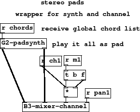
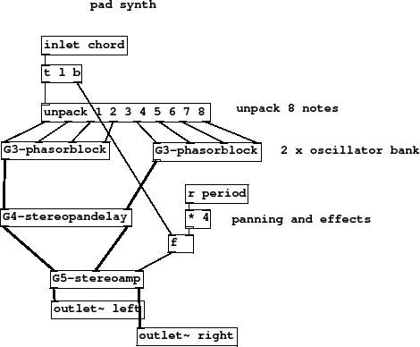
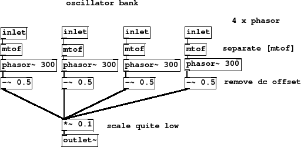
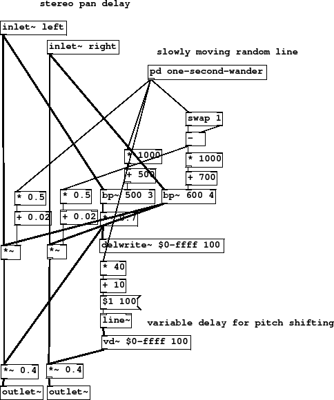
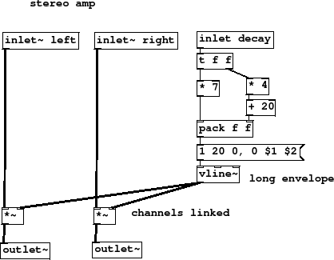
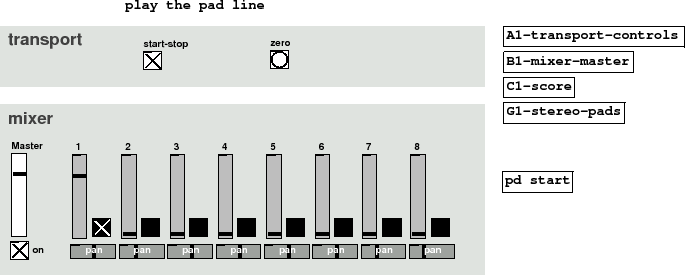

Subsections
Figure 8 summary
- wrapper for synth and channel
- receive global chord list
- play it all as pad
This patch is typical of a wrapper. It is mainly a way to tuck two or three
related things in a box together. We have a synth part which is going to play some
audio and all the global messages needed to make that work, in this case only
[r chords], and we have a mixer channel with a few extras to implement a
channel mute.
Figure 8:
G1-stereo-pads
|

|
G1-stereo-pads.pd
Figure 9 summary
- unpack 8 notes
- 2 x oscillator bank
- panning and effects
All the notes from the chord are unpacked and sent to separate oscillators.
A [phasorblock] each contains 4 phasors so we have one half of
the chord going to the left side, and the other to the right side
of a stereo chorus/delay. The amplitude decay time of the synth, which
is processed by [stereoamp], is set to
4 times the current period, so it will move automatically if there
is any tempo change. Locking synth parameters to global variables
like tempo is very useful, you may have many lfos all running
in synchrony if you use a fast timebase by running the metro
at 16 times the drum speed to broadcast a time value from
which message rate lfos can be derived.
Figure 9:
G2-padsynth
|

|
G2-padsynth.pd
Figure 10 summary
- 4 x phasor
- separate [mtof]
- remove dc offset
- scale quite low
Bunching up a load of osc sources in one signal abstraction is quite typical
but with phasors we need to remember to remove the DC offset
because a phasor is not symmetrical about zero. There are clever
ways to reuse a [mtof] if we have lists of notes, but it
is a very inexpensive unit so we opt to have separate inlets
and separate [mtof] for each voice.
Figure 10:
G3-phasorblock
|

|
G3-phasorblock.pd
Figure 11 summary
- slowly moving random line
- variable delay for pitch shifting
When setting the mood for a piece by choosing some
chords it often helps to use "big" sounds.
Rich sounds in certain timbres suggest things
harmonically. Pure sine waves don't give the potential
for suggesting harmonically related chords because they
have no overtones of their own. A way to get a richer sound
from fairly weak sawtooth waves is to employ a chorus or
vari-delay effect.
Instead of a regular lfo that sweeps back and forth over
a fixed period we have a wandering control signal. This
is used to sweep two bandpass filters with a slightly less
bright version going to the delay. Delay unit [vd~ $0-ffff]
is a vari-rate delay with its time in the range 10 ms to 50 ms and
swept by the same wandering signal. This results is a rather
old fashioned, warped kind of effect with occasional fast
excursion that make the sound go out of tune.
Figure 11:
G4-stereopandelay
|

|
G4-stereopandelay.pd
Figure 12 summary
- long envelope
- channels linked
To control both left and right outputs of
the chorus together we need a stereo
envelope. The control signal holds
for about twice the decay time, which
in this case is 16 times the period. Look
back to the [padsynth] to see we
used 4 times the period. This gives a soft
fall to the pads so they don't play
in a constant dirge, slightly more string-like
than organ.
Figure 12:
G5-stereoamp
|

|
G5-stereoamp.pd
Figure 13 summary
Only one fader is up on the GUI, panned to the middle.
There are no other parts in the piece at present.
Experiment with panning and fading the part. Test out the
on/off (unmute buttons) and resetting the timebase. Try
putting different notes in the score chord lists.
Figure 13:
G6-pad-line
|

|
G6-pad-line-play.pd
G6-pad-line-play.ogg
Andy Farnell
http://obiwannabe.co.uk/